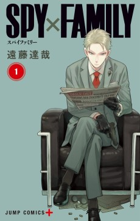

Your Name.Two lives, almost touching. Watch it twice.
SAVE+KURO · DISCOVER + CLUBS · DIRECTION C
Every row is easy to scan. The page sits on Home’s warm paper and reuses Home’s quiet cards, hairlines, list rows and medium switch. Discover keeps its curated order and gets a rhythm. Clubs keep their room, and the room is now the club’s one surface. Frames are 390 × 844. The artwork is the prototype’s real art, paired with its real titles. Material colours are the prototype’s derived base/deep values. Air times, members and notes are sample data.
HomeSceneCard grammar on the title’s material with a save key (P6). Browse surfaced as a glance card. Airing today = calendar-card rows (P2).

 ›
› Mob Psycho 100Ep. 7 · on your list18:00›
Mob Psycho 100Ep. 7 · on your list18:00› Jujutsu KaisenEp. 2118:30›
Jujutsu KaisenEp. 2118:30› Demon SlayerEp. 421:15›
Demon SlayerEp. 421:15› Attack on TitanEp. 12 · 2 in your clubsToday›Fullmetal Alchemist: Brotherhood2009 · 64 eps
Attack on TitanEp. 12 · 2 in your clubsToday›Fullmetal Alchemist: Brotherhood2009 · 64 eps A Silent Voice2016 · FilmDeath Note2006 · 37 epsAttack on Titan2013 · 25 eps
A Silent Voice2016 · FilmDeath Note2006 · 37 epsAttack on Titan2013 · 25 eps Your Name.2016 · FilmJujutsu Kaisen2020 · 24 eps
Your Name.2016 · FilmJujutsu Kaisen2020 · 24 epsHomeFooter. ›Mob Psycho 100Ep. 7 · on your list18:00›Jujutsu KaisenEp. 2118:30›Demon SlayerEp. 421:15›Attack on TitanEp. 12Today›Fullmetal Alchemist: Brotherhood2009 · 64 epsA Silent Voice2016 · FilmDeath Note2006 · 37 epsAttack on Titan2013 · 25 epsYour Name.✓ On your listJujutsu Kaisen2 in your clubsFullmetal Alchemist: Brotherhood2009 · 64 epsDeath Note2006 · 37 epsAttack on Titan2013 · 25 epsMob Psycho 1002016 · 12 epsMob Psycho 1002016 · 12 epsOn your list›Your Name.2016 · Film›Jujutsu Kaisen2020 · 24 eps2 in your clubs›A Silent Voice2016 · Film›Demon Slayer2019 · 26 eps›
›Mob Psycho 100Ep. 7 · on your list18:00›Jujutsu KaisenEp. 2118:30›Demon SlayerEp. 421:15›Attack on TitanEp. 12Today›Fullmetal Alchemist: Brotherhood2009 · 64 epsA Silent Voice2016 · FilmDeath Note2006 · 37 epsAttack on Titan2013 · 25 epsYour Name.✓ On your listJujutsu Kaisen2 in your clubsFullmetal Alchemist: Brotherhood2009 · 64 epsDeath Note2006 · 37 epsAttack on Titan2013 · 25 epsMob Psycho 1002016 · 12 epsMob Psycho 1002016 · 12 epsOn your list›Your Name.2016 · Film›Jujutsu Kaisen2020 · 24 eps2 in your clubs›A Silent Voice2016 · Film›Demon Slayer2019 · 26 eps›


›Berserk1989 · OngoingVinland Saga2005 · Finished Dandadan2021 · Ongoing
Dandadan2021 · Ongoing Chainsaw Man✓ On your listBerserk1989Vagabond1998Vinland Saga2005
Chainsaw Man✓ On your listBerserk1989Vagabond1998Vinland Saga2005 Jujutsu Kaisen2018
Jujutsu Kaisen2018activity_preview; counts from rail_count/poll_count.Mina reached episode 7 of Mob Psycho 1002h ago›Brotherhood RewatchStatus shared · 3 members · 1 railAri reached episode 19 of Fullmetal AlchemistYesterday›A club is 2 to 20 friends you invite. Nothing in it is public.
invite_code. Tabs use the switch grammar.Five friends, one episode on Sundays, no spoilers before Monday.
You and 4 others · 3 rails · 1 open poll · active 2h ago
Mina2h ago · Sunday watchMay contain spoilers. Tap to read.⌄Mob Psycho 100 ›One episode a week, together.
Mob Psycho 100Ep. 7 of 12 · youMina, Jules watching🔥 3 👀 1☺+Demon SlayerEp. 4 of 26Ari watching❤️ 2☺+Attack on TitanNot startedLou planned☺+One episode a week, together.
Mob Psycho 100Ep. 7 of 12 · youMina, Jules watching🔥 3 👀 1☺+Demon SlayerEp. 4 of 26Ari watching❤️ 2☺+Attack on TitanNot startedLou planned☺+Locked: only admins add here.
Vinland SagaCh. 54 of 214Jules reading💯 1☺+VagabondCh. 12 of 327 · youYou, Mina reading☺+BerserkNot started☺+member_statuses with updated_at in the last 7 days, drawn in HomeCalendarCard grammar with covers. Older updates sit under an “Earlier” fold. The pace line is a quiet card.⌃Mina reached episode 7Mob Psycho 1002h›Jules started Vinland SagaManga corner · Ch. 15h›You reached episode 4Demon Slayer9h›⌃You finished Your Name.Sunday watchSun›Ari started Mob Psycho 100Sunday watchSun›⌄closes_at. “You asked” (P15). The vote circle and the title link are separate 44 pt targets.Mob Psycho 100 II3 votes · 60%›Fullmetal Alchemist: Brotherhood1 vote · 20%›A Silent Voice1 vote · 20%›5 of 5 voted · you voted Mob Psycho 100 II
KuroSkeleton blocks at ink .08 / .13 (P10), shaped like the lead + calendar card; KuroScrubLine.KuroOfflineView: ridge, 24 pt bold, one ink-rule retry.Discover needs a connection the first time. Your lists still work.
Try again →Pull to refresh, or browse the catalogue.
Try again →KuroErrorView; a failed read is never “no clubs”.Try again in a moment.
Try again →HomeQuietCard.HomeClubRoomFailureLine, because the ink ridge would vanish on dark.Angle: calm density. On Discover and Clubs a reader should see what is there, how many there are and where a tap goes, all within one screen of each section. The direction adds no new visual idea. It takes the four surfaces Home already uses (the glance or quiet card, the calendar card of rows, the scene card on the title's own material, and the dark club room) and uses them to break up Discover's one repeated pattern and to merge Clubs' four separate looks. There is less image area per section and more rows per screen. Every section in a frame uses one card size.
kuroCanvasHome #FFFEF8; Discover Manga paints kuroCanvasHomeManga #F5F5F3. Clubs list and club detail paint #FFFEF8.KuroMainView.Section.canvas for .discover (following the Discover medium) and .clubs in the same commit as the page backgrounds (seam rule, amendments 8 and 22). The header in every frame is drawn on the page canvas to show that there is no seam.HomeInk.posterFill #E9E9E6, not the cold kuroMissingArt.KuroSectionHeader(.title) regular 19 pt heading is gone from both pages. Three hand-set roles replace it, each a copy of Home's measured values:
kuroMuted count, as in "Other clubs", rail names, "Closed".HomeOpeningLineView, a 9 pt 1.05-tracked kicker with a 14 pt semibold headline.HomeFooter closes each pager page.KuroSkeleton blocks at ink .08 / .13, shaped like the lead and the calendar card.KuroStateLayout. Discover's empty state drops the outline capsule.HomeClubRoomFailureLine..homeEntrance() (380 ms, once).KuroMotion.medium when the Discover medium changes..kuroConfirmStamp only after LibraryActions.save returns durably.KuroMotionAllowance).KuroArtWordFill; the others solid #6E786FKuroPosterMediumSwitch hard-codes two MediaKind columns (HomePagePicture.swift:169-170). The proposal is to make it generic over an option list, keep Home and Taste on the two-word call, and have Discover pass DiscoverMediaTypeFilter.allCases. With three words the size is 30 pt (26 at ≤ 328 pt, existing minimumScaleFactor(0.6)), and the columns hug their words with a 22 pt gap so ALL is not padded to a third of the width.HomeOpeningLineView(kicker: date, headline: "Today's pick."). It moves the lead's kicker out of the frame into Home's opening grammar.HomeSceneCard-shaped card:
ArtworkMaterial base → deep, via ArtworkMaterialStore.material(for: banner ?? cover), with the 17 pt title and the argument line.KuroKeyFace (KuroAdvanceKey.swift:113) with the light face, wrapped in a new small KuroSaveKey, with a + / ✓ glyph and a 9 pt SAVE / SAVED unit. It is not KuroAdvanceKey, which is +1 progress only. Its action is LibraryActions.save (Plan to watch/read). When the title is already tracked it shows ✓ and opens the tracking editor through routes.presentTrackingEditor.HomeComingUpGlance style, #FFFEFA, radius 8) directly under the lead, with three thumbs from the current medium. In the live world (series flags at 100%) this is the only way from Discover to the full catalogue, so it moves from about 3,400 pt down to the first screen. Its tap is routes.openBrowse(), which pushes Browse as a journey (N11).HomeCalendarCard-style card of four rows:
airingSlotsLibraryStore.isTracked; "2 in your clubs" from SocialActivityStoreHomeMangaLeafMetrics width).quietShelf-style rows: number, 40 × 60 cover, 13 pt title, 10 pt meta, 0.5 pt hairline. The local refinement "All · Short · Long · Finished" becomes small hairline capsules (28 pt face, 44 pt target), so it can never be confused with the medium words. That fixes the double meaning noted in audit §3.3. It is still a local rail filter.UserDefaults; that is a small client-only fix.HomeFooter.Estimated page length for All, from the frame metrics: about 2,300 pt. That is opening plus lead about 420, airing card 400, two 3 × 2 grids at about 420 each, two rails at about 260 each, a ranked list of 5 at about 440, plus headings and footer. Today it is about 3,400. No frame shows the full page.
HomeClubRoom shell: ClubRoomBackground(24), seal, kicker, serif name and positional member fills.activity_preview and the newest entries sit in dark rows, with a footer of audience, members, rails, open polls and the unread dot.ClubSeal/ClubKnot to ClubRoomStyle.swift and align ClubRoomMetrics to 36 / 30, with the compact threshold at 328 (fixes drift §14.1 and §14.2).JoinClubResponse.club_id → routes.openClub) (P16).KuroLocale.ClubRoomPalette.key faces in the room, not floating:
invite_code only to them (fetch_club_bundle). Members do not see the key, so there is no dead tap. It opens the invite tool, with ClubInfo.invite_code, Copy and the system share sheet carrying kuro://join/<code>. It does not open Settings.my_progress), and "Mina, Jules watching" (member_statuses).clubs_reactions_v1 is at 100%): counts plus a 28 pt react face in a 44 pt target.member_statuses whose updated_at falls in the last 7 days in the club's display time zone.HomeCalendarCard grammar: date chip, label, count, stacked covers, and open rows with the entry's coverImage, now drawn.HomeQuietCard above the list.created_by = viewer, closes_at).media_id is set, the label, a 3 pt ink bar, "N votes · %", and a › that opens the title. Voting and opening are separate targets.| Tap | Goes to | Rule |
|---|---|---|
| Lead art, title, grid and rail covers, calendar and ranked rows | routes.openMedia as a pushed title journey | N9, N5 |
| Lead save key | LibraryActions.save; when tracked, routes.presentTrackingEditor (a tool that returns to Discover) | N7 |
| See all ›, "Show 2 more" | See all journey (✕ only, compact bar), deduped by DiscoverSeeAllPolicy.pageID | N3, N5, H1 |
| Browse the catalogue | routes.openBrowse() pushed as a journey | N11 |
| Room masthead, dark rows, club rows | routes.openClub (club journey root: ✕ only) | N3, N9 |
| Add a title / Invite / New poll / ⋯ | Tool sheets with .kuroLeavesJourney(), grabber and Cancel; create-rail and new-poll keep the discard guard | N7, N8 |
| This week row, poll title ›, note "{title} ›" | Title pushed inside the club journey | N9 |
| Join a club → success | The joined club opens | P16 |
| Field | Store / RPC | Shown as |
|---|---|---|
bannerImage, cover → ArtworkMaterial | DailyFeature, ArtworkMaterialStore | Lead material foot, switch word fill |
airingSlots / next_airing_at | DiscoveryStore | Airing today "when" column |
isTracked | LibraryStore | "✓ On your list", save key state |
friendCount | SocialActivityStore | "2 in your clubs" |
rail_count, poll_count, last_activity_at, activity_preview, cover_images[0], member_names | ClubListRow | Room footer, quiet rows |
member_statuses.updated_at, activity coverImage, my_progress | ClubBundle | This week, rail card progress |
closes_at, created_by, option media_type/media_id | ClubPoll, ClubPollOption | Deadline, "You asked", option cover and link |
invite_code | ClubInfo | Invite tool |
reactions, my_reactions | ClubRailItem (flag 100%) | Rail card reaction row |
KuroLocale.text)| EN | DE |
|---|---|
| This week | Diese Woche |
| This week. · {n} updates · since {date} | Diese Woche. · {n} Updates · seit {Datum} |
| Earlier · {n} updates | Früher · {n} Updates |
| A quiet week. Updates from the last seven days show here. | Eine ruhige Woche. Updates der letzten sieben Tage erscheinen hier. |
| You · You and {n} others | Du · Du und {n} weitere |
| You reached episode {n} / You finished {title} | Du bist bei Folge {n} / Du hast {title} beendet |
| Invite | Einladen |
| Add a title (existing) | Titel hinzufügen |
| New poll (existing) | Neue Umfrage |
| You asked · Closes {weekday date} | Deine Frage · Endet {Wochentag Datum} |
| {name} asked · Closed {date} | Frage von {name} · Beendet {Datum} |
| Save / Saved (key unit) | Merken / Gemerkt |
| On your list | In deiner Liste |
| Every title. Filter by format, year, status. | Alle Titel. Nach Format, Jahr, Status filtern. |
| {n} more sections (existing) | {n} weitere Bereiche |
| Between us. | Unter uns. |
| Most recent (room kicker) | Zuletzt aktiv |
| Other clubs | Weitere Clubs |
The existing strings keep their German exactly as written: Tipp des Tages, Alle ansehen, Den Katalog durchstöbern, Deine Clubs., Läuft heute, Neu für dich, Unverzichtbare Anime, Gerade beliebt, Eine Frage stellen, Geschlossen. Rails keeps its German label "Listen".
HomeMangaLeafMetrics compact).kuroReadableWidth() 680 column; grids become 4 columns once the column passes 560 pt; rails show more covers; the room keeps its 24 radius..accessibilityElement(children: .combine) plus explicit actions (audit A4)